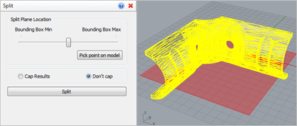
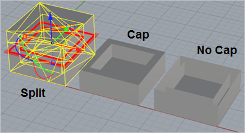

Use this command to split your mesh model at a location you choose parallel to the C-Plane orientation. You can control the split plane location using a slider or a point on the model. The split section profile and plane is dynamically displayed in the graphics window for reference. Optionally, you can Cap the section to maintain a closed volume on your part.
|
Screen Pick
|
Optional Information
|
Step 1
|
Select the mesh you want to split and then press Enter. You can select from the graphics window or from the RhinoCAM Browser.
|
You can select a mesh first and then select the command icon.
|
Step 2
|
From the command dialog, specify the Section Plane Location using the slider or pick a point on the model. Refer to the Optional Split Parameters section below.
|
A dynamic preview of the Split profile is shown in the graphics window.
|
Step 3
|
From the command dialog, select the Split button.
|
-
|
|
 or or 
|
The following Split parameters are available:
 Optional Split Parameters
•Section Plane Location
A slider is provided to move the split plane toward the Min or Max of the bounding box of the selected mesh(s). A dynamic preview of the Split profile is also shown in the graphics window. •Pick Point on Model
Optionally, you can select the Pick point on model button. The allows you to locate the Split plane at a point on the model that you select. •Cap / Don't Cap
When the selected mesh(s) is split, you can choose to Cap the open profile created by the split plane.
 Split: Difference between Cap and Don't Cap
|
•Split
Pick this button to split the selected mesh(s). The results are displayed in graphics window. See example below:
|
 The Split command is useful for parts that need to be 3D printed in more than one section at a time such as closed volumes with inner walls. Refer to the example shown. The Split command is useful for parts that need to be 3D printed in more than one section at a time such as closed volumes with inner walls. Refer to the example shown.
|
|